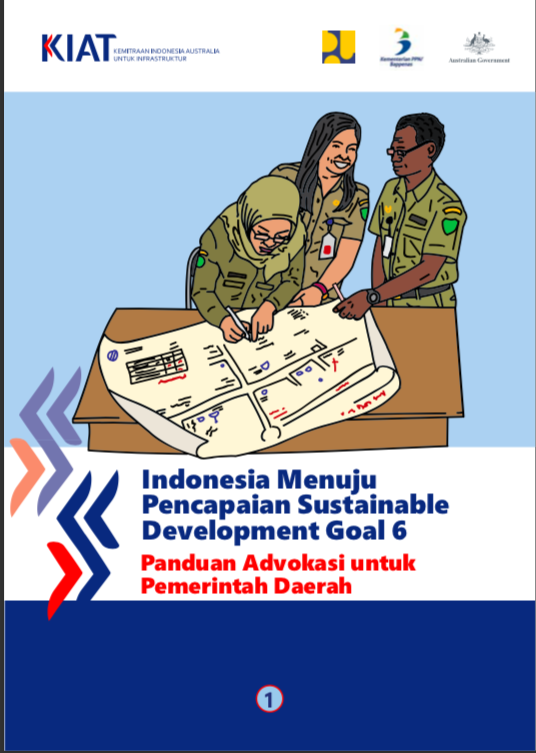

Sustainable Development Goals: SDGs
- Sustainable Development Goals (SDGs) adalah komitmen global yang dicanangkan untuk menciptakan dunia yang lebih baik dan lebih sejahtera bagi semua orang. Terdapat 17 tujuan utama yang harus dicapai hingga tahun 2030, dan tujuan ini mencakup berbagai aspek kehidupan, seperti pengentasan kemiskinan, pendidikan yang berkualitas, kesehatan yang baik, kesetaraan gender, serta perlindungan lingkungan. Tujuan-tujuan ini disepakati oleh semua negara anggota Perserikatan Bangsa-Bangsa (PBB), baik negara maju maupun negara berkembang, dalam Sidang Umum PBB pada bulan September 2015.
- GOAL 6: Clean Water and Sanitation. Goal 6 dari Sustainable Development Goals (SDGs) adalah tentang "Air Bersih dan Sanitasi yang Layak untuk Semua." Tujuan ini sangat penting karena air bersih adalah kebutuhan dasar setiap orang. Menurut data dari WHO dan UNICEF, sekitar 2,2 miliar orang di seluruh dunia tidak memiliki akses yang aman terhadap air bersih, dan lebih dari 4 miliar orang tidak memiliki akses ke sanitasi yang layak. Ini menunjukkan bahwa masih banyak orang yang kesulitan mendapatkan air yang bersih dan sehat. Di Indonesia, pemerintah sudah melakukan banyak hal untuk mencapai Goal 6 ini. Salah satu contohnya adalah program "Pamsimas" (Program Penyediaan Air Minum dan Sanitasi Berbasis Masyarakat). Program ini bertujuan untuk meningkatkan akses masyarakat terhadap air bersih dan sanitasi yang layak, terutama di daerah pedesaan. Sejak diluncurkan, Pamsimas telah membantu ribuan desa di Indonesia untuk membangun sistem penyediaan air bersih dan toilet yang layak. Misalnya, di desa-desa di Nusa Tenggara Timur, banyak sumur bor dibangun sehingga warga tidak perlu lagi mengambil air dari sungai yang kotor.
- Fakta menarik lainnya adalah, di Bali, pemerintah dan masyarakat berkolaborasi dalam menjaga sumber daya air dengan cara mengelola subak, yaitu sistem irigasi tradisional yang sudah ada sejak lama. Sistem ini tidak hanya membantu pertanian, tetapi juga menjaga keberlangsungan sumber air. Selain itu, di Jakarta, ada program "Jakarta Clean Water" yang bertujuan untuk meningkatkan akses masyarakat terhadap air bersih, di mana mereka membangun jaringan pipa air bersih ke rumah-rumah warga. Menurut data, sekitar 2 juta penduduk Jakarta telah mendapatkan akses air bersih melalui program ini.
- Melalui berbagai program dan inisiatif yang dijalankan, Indonesia menunjukkan komitmennya untuk mencapai Goal 6 dari SDGs. Dengan kerja sama antara pemerintah, masyarakat, dan organisasi non-pemerintah, diharapkan semua warga negara Indonesia dapat menikmati akses air bersih dan sanitasi yang layak. Ini adalah langkah penting untuk menciptakan kehidupan yang lebih sehat dan sejahtera, serta untuk menjaga lingkungan bagi generasi mendatang.
